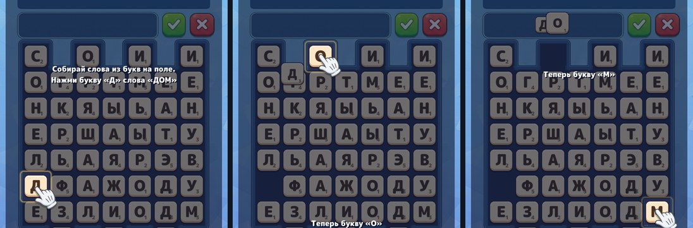
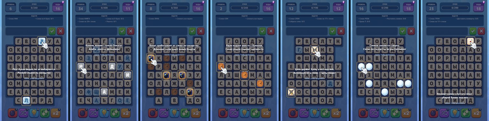
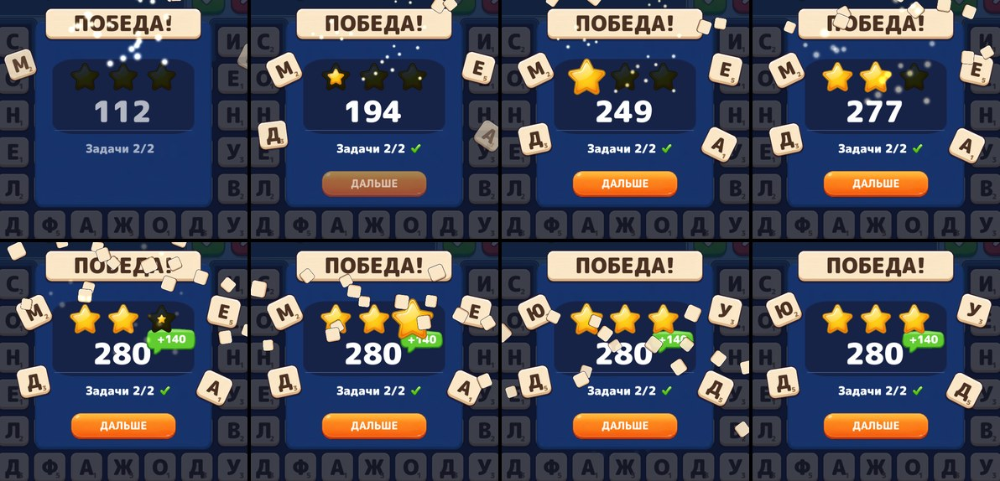

Обучение ведёт по буквам, финал парит, ракеты не ползают
Первый шаг обучения теперь указывает на конкретную букву и переезжает по мере набора,
экран победы получил спокойное парение букв, а полёты — время по дистанции: буквы с дальнего края
поля летят дольше, ракета облетает близкую цель по дуге.
366 тестов зелёные6 новых тестов1 правка движка7 шагов про элементы
Видео
Обучение: буква за буквойПодсветка, рука и подпись переезжают на следующую ненабранную букву слова-задания; тап вне выреза ведёт дальше, внутри — попадает в игру.
Победа: появление и покойБуквы влетают снаружи ровно в ту точку, с которой начинается покой — передача проходит без рывка. Дальше они парят по замкнутой траектории и меняются, звёзды по очереди бампают, остальное неподвижно.
Ракета: облёт близкой целиСкорость постоянная — 760 px/с. Близкая цель получает крюк: ракета целится за неё, на середине пути финиш переставляется на клетку.
Фейерверк: сбор и залпСлово из 7 букв кладёт бонус на поле, слово рядом запускает залп по 10 клеткам — по одной ракете на цель, без повторов.
Обучение: шаг за буквой

«Нажми букву «Д»» → «Теперь букву «О»» → «Теперь букву «М»». Затемнение раскладывается полосами со склейкой, поэтому при шести вырезах экран остаётся затемнён целиком.
Все элементы поля

Лёд, камень, бонус, ящик, цепь, снежок, конверт — шаг появляется при первом появлении элемента и запоминается в прогрессе игрока.
Передача появления в покой

Влёт заканчивается в позиции покоя при t=0 (общая функция _IdleTransform), поэтому буквы не дёргаются на стыке анимаций: шаг плитки за кадр после влёта — меньше 6 px (тест WinPopupHandsLettersOverToIdleWithoutJump).
Что ещё починено
Бонусы ломают ящик целиком: взрыв бомбы больше не оставляет «недобитый» ящик на второй ход.
Буквы, выбитые бонусами, летят в шкалу очков со скоростью 900 px/с — дальние летят дольше, а не за то же время.
Бейдж «+N» на экране победы — облачко с хвостиком, 9-slice (хвостик в углу не тянется).
Движок: IAnimationState::SetSpeed стал scriptable — один клип растягивается под вычисленную длительность вместо клипа на каждый случай.